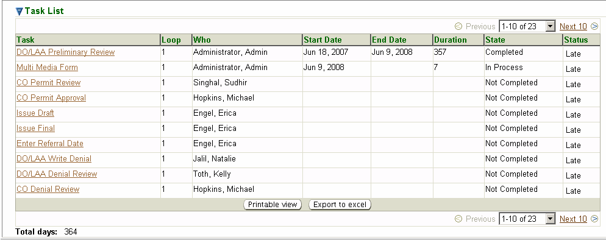

The third-level menu, Summary, of the second-level Workflow Diagram page contains a Task List datagrid of all tasks for
the current workflow being viewed.

The following columns describe relevant
information about the workflow processing:
Task – the name of
each task, corresponding to a specific task block in the Workflow Diagram.Each
task is a hyperlink.Click on the
task name to go to the Task
Profile.
Loop – the iteration
number of the task, it will be ‘1’ initially and change to ‘2’ if the task
is repeated, as when a reviewer returns a permit for further technical
review. The number continues to increase each time the workflow
returns to it or a previous task.
Who – the user
assigned to the task.
Start Date – the
date that the task was started.This
date is set when the previous task is completed (or, for the initial task,
the date the workflow is created)
End Date – the date that
the task was completed or blank, if not yet completed.
Duration – the time
taken for completion of the task, i.e., the difference between the End Date and the Start Date.
State – In Process, Completed, or N/A.
Status – an
indication of whether the workflow is projected to be completed on time;
it corresponds to the color-coded timeline at the top of the Workflow Diagram: OK (on time/green); Jeopardy (nearing
the deadline/yellow); or Late (past the deadline/red).
Total days: at the
bottom left corner is a sum of all Duration
days for all tasks.
Note: the Task List identified above is showing the first ten tasks.Use the picklist in the bottom right corner to
view more of the tasks.